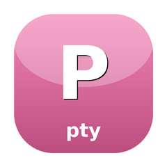

SugarPty
Pseudo-terminal primitives — open / spawn / read / write / resize

Open a master/slave PTY pair, spawn a child process with its stdin, stdout and stderr wired to the slave, and pump bytes and forward resizes between the host terminal and the child. The POSIX path wraps the libc PTY syscalls (posix_openpt, grantpt, unlockpt, ptsname_r, ioctl(TIOCSWINSZ)) through ext-ffi: no shelling out to /usr/bin/script and no C extension to compile. It mirrors charmbracelet/x/xpty (Go). Fallbacks exist only for termios (stty(1)), macOS size reads (stty(1)) and exit detection (proc_get_status polling). With ffi.enable=0 the core open, read, write and kill path has no fallback and throws.
Install
composer require sugarcraft/sugar-ptyRequires PHP 8.3+ with ext-ffi. ext-pcntl is optional: the lib polls waitpid() when pcntl is absent, and SignalForwarder degrades to a no-op. ext-posix is optional too: Libc::kill() uses posix_kill() when it is loaded and libc kill(2) over FFI otherwise. Windows support needs PHP 8.4+ and the ConPTY backend (see Architecture).
Quickstart
Open, spawn and drain
use SugarCraft\Pty\PtySystemFactory;
$system = PtySystemFactory::new();
$pair = $system->open(100, 30); // master/slave pair
$child = $pair->slave()->spawn(
['/bin/bash', '-c', 'echo $TERM; date'],
env: [...(array) getenv(), 'TERM' => 'xterm-256color'], // $env REPLACES the child env
);
$master = $pair->master();
$out = '';
while (($chunk = $master->read(4096)) !== '') { // '' = confirmed EOF
if ($chunk !== null) { // null = timed out (0.05 s default)
$out .= $chunk;
}
}
$exit = $child->wait();
$master->close();Drain until EOF instead of polling exited() first. A fast child's final bytes can sit in the master buffer before the reap, and an exited()-first loop drops them. PosixPump::run() implements this loop with callbacks if you prefer not to hand-roll it.
Resize forwarding
use SugarCraft\Pty\SignalForwarder;
use SugarCraft\Core\Util\Tty;
$tty = new Tty(STDIN); // the host terminal
SignalForwarder::attachSigwinch(
$master,
fn () => $tty->size(), // ['cols' => N, 'rows' => N]
);
// Now every host SIGWINCH triggers $master->resize($cols, $rows).
// For raw /dev/tty fds (no MasterPty object):
$ttyFd = \SugarCraft\Pty\Libc::lib()->open('/dev/tty', 0x0002); // O_RDWR
SignalForwarder::attachSigwinchToFd(
$ttyFd,
fn () => $tty->size(),
fn (int $cols, int $rows) => null, // optional post-resize callback
);Concepts
A PTY is a pair of file descriptors. The master is the end the host holds: bytes written to it arrive as keystrokes on the child, and bytes the child prints come back out of it. The slave is the end the child sees as its terminal, so the child's stdin, stdout and stderr all point at it. Cooked mode (the default line discipline) echoes input and rewrites \n to \r\n, which is why a needle that contains a bare newline can fail to match. The concepts guide covers master versus slave, termios modes, the controlling terminal and SIGWINCH in more depth.
The library keeps bytes opaque. The pump moves them without interpreting them. Interpretation is opt-in: Expect matches needles, PtyInputDecoder turns master bytes into key and mouse events, and AnsiOutputParser tracks SGR state.
Tasks
Use it for
- In-process SSH session hosting. Drives SugarSshServer without depending on host sshd: spawn the user's shell inside the SSH server process with full PTY control.
- Recorded TUI sessions. Pair with CandyVcr to capture the input bytes typed into the master and the rendered output read back from it.
- Test harnesses for ANSI-emitting CLIs. Spawn the binary under test in a controlled PTY, pump fixture input, and assert on the captured output through SugarVterm's cell grid.
- Demo recorders. Run a script in a PTY, capture the byte stream and winsize, and replay it later.
Script a session with Expect
Expect::on() wraps a master with bounded waits. Every wait takes a timeout and throws ExpectTimeoutException or ExpectEofException rather than blocking forever. The shipped examples/expect-login.php runs this end to end.
use SugarCraft\Pty\Expect;
$token = 'ping-' . uniqid('', true);
$child = $pair->slave()->spawn(['/bin/cat']);
$expect = Expect::on($pair->master());
$expect->send($token . "\r");
$seen = $expect->expectAny([$token], 2.0); // throws ExpectTimeoutException after 2 s
echo strlen((string) $seen->before), " bytes before the match\n";Controlling terminal (Ctrl+C, job control)
Pass controllingTerminal: true to spawn() when Ctrl+C typed at the master must deliver SIGINT to the child. This is required for interactive shells (bash -i), editors (vim, less) and anything else that uses tty-driven job control.
$system = PtySystemFactory::new();
$pair = $system->open();
$child = $pair->slave()->spawn(
['/bin/bash', '-i'],
env: [...(array) getenv(), 'TERM' => 'xterm-256color'],
controllingTerminal: true, // claim slave as the child's ctty
);
$pair->master()->write("\x03"); // Ctrl+C → SIGINT to the childThe spawn routes through bin/pty-shim.php, which does setsid(), ioctl(0, TIOCSCTTY, 0) and pcntl_exec() between proc_open and the real command. It requires ext-pcntl. Each spawn pays a shim startup cost. The cost is opt-in because non-interactive spawns do not benefit from it.
API
The table below lists the public classes a caller normally reaches. PtySystemFactory is the entry point to use. The contract types under SugarCraft\Pty\Contract carry no logic.
| Class | Method | Description |
|---|---|---|
| PtySystemFactory | new() | Build the platform PtySystem, honoring SUGARCRAFT_PTY_BACKEND |
| PosixPtySystem / PosixPtyPair | open(cols, rows) / master() / slave() | POSIX implementation of the PtySystem contract; the pair hands out the master and slave ends |
| PosixMasterPty | read(), write(), resize(), size(), stream(), close() | POSIX implementation of the MasterPty contract; read() with a null timeout blocks per the stream's mode, and close() is idempotent and throws PtyException if the close fails |
| PosixSlavePty | spawn(cmd, env, cols = null, rows = null, controllingTerminal = false) | Spawn on a pair from PtySystem::open(); explicit geometry applied on every spawn, null keeps the pair's current size |
| Kernel32ConPty | (FFI binding) | FFI binding of the ConPtyApi surface to kernel32.dll, used by the Windows ConPTY backend |
| Libc | lib(), kill(pid, signal) | Lazy FFI handle to the C library; kill() uses posix_kill() when ext-posix is loaded, libc kill(2) over FFI otherwise |
| SizeIoctl | requestsFor(family), pack(rows, cols), unpack(ws), setSizeViaLibc(), getSizeViaLibc() | Per-platform TIOCSWINSZ and TIOCGWINSZ request numbers and the winsize struct marshalling |
| TermiosFactory | fallbackCount() | How many times the FFI termios backend fell back to stty (each fallback is also logged) |
| SignalForwarder | attachSigwinch(pty, provider) | Forward SIGWINCH to PTY resize |
| SignalForwarder | attachSigwinchToFd(fd, provider, onResize?) | Forward SIGWINCH to raw /dev/tty fd via TIOCSWINSZ |
| ControllingTerminal | claim(fd) | Claim a fd as controlling terminal via setsid() + ioctl(TIOCSCTTY) |
| Child | pid(), exited(), wait(), kill(signal) | Child process ID; non-blocking exit probe; idempotent await (signal deaths surface as 128+signo); signal the child (no-op once reaped) |
| PosixPump | run(master, stdin, stdout, child?, opts?) | Byte pump with optional PumpOptions callbacks (blocking stream_select loop) |
| ReactPump | start() / stop() / isRunning() | The byte pump driven by the ReactPHP event loop instead of a blocking select |
| MultiPump | add(master, stdoutSink, child?, opts?) / tick() / run() / runAsync() / remove(id) | Multiplex many sessions on one loop; tick() delivers one keepalive pass, and the callbacks ride PosixPump or ReactPump |
| PumpOptions | withOnIdle(fn), withOnSigwinch(fn(cols, rows)), withOnChildExit(fn(code)), withRecorder(recorder) | Pump callbacks and session recorder. onSigwinch is a polled size-diff observer on idle ticks, not a signal hook, and MultiPump never delivers it |
| PtyPool | acquire(cols, rows) / release(pair) / drain() | Concurrency ceiling on live pairs; abandoned pairs free their slot |
| Expect | on(master) / send() / sendLine() / expect() / expectAny() / expectPattern() / expectEof() | Bounded scripted automation over a master: needles, regex, stall-protected sends |
| PtyInputDecoder | readEvents(timeout) / readEventsBlocking(timeout?) / isEof() / remainder() / reset() | Master bytes to key and mouse events via sugar-input's EscapeDecoder; an empty readEvents() is ambiguous, so isEof() is the only end-of-stream signal |
| AnsiOutputParser + SgrHandler | forMaster(master) / readChunk(timeout) / readChunkWithTransitions(timeout) / state() / drainTransitions() / reset() | Verbatim byte reads with optimistic SGR state tracking (OSC not tracked); SgrHandler keeps up to 1024 transitions in a drop-oldest ring |
| PosixProcess | spawn() / wait() / kill() / stdoutBytes() / stderrBytes() | Plain proc_open child with pipe capture (no PTY) |
Only methods declared in sugar-pty/src, or inherited from a parent declared there, are listed. A type that extends a class outside that tree, such as \RuntimeException, does not show the methods of that class.
SugarCraft\Pty
Argv final class
Redacted argv rendering for failure messages.
| Method | Summary |
|---|---|
static describe(array $cmd): string | One-line rendering of an argv list: the program, then how many arguments were withheld (unless debug mode is opted in, which renders the real join — that mode's whole purpose). |
static describeWide(string $applicationName, string $commandLine): string | Windows twin of describe(): the failure point holds the already-joined command line (and optionally an application name), not an argv list. The application name is program-identifying and stays; the joined line is the argument-bearing secret surface and drops, replaced by its length in wide code units. |
static debugAllowed(): bool | The single opt-in question. Literal env name: tests/EnvRosterTest.php token-scans reads like this one and demands the README row. |
Child class
Handle to a child process spawned through \SugarCraft\Pty\Posix\PosixSlavePty::spawn().
| Method | Summary |
|---|---|
__construct(public readonly int $pid, $process) | |
__destruct() | |
exited(): bool | |
wait(): int | |
onExit(LoopInterface $loop, callable $fn, float $fallbackPollSec = self::EXIT_FALLBACK_POLL_SECONDS, bool $fallbackPoll = true): \Closure | Run $fn once, with the exit status, when this child exits. |
waitAsync(?LoopInterface $loop = null, float $pollIntervalSec = self::EXIT_FALLBACK_POLL_SECONDS): PromiseInterface | Async variant of wait(): returns a ReactPHP promise that resolves with the child's exit code without ever blocking the event loop. |
exitCode(): ?int | |
pid(): int |
ControllingTerminal final class
Static utility for claiming a file descriptor as the calling process's controlling terminal.
| Method | Summary |
|---|---|
static cttyRequestFor(string $family): int | Per-family TIOCSCTTY request number (PTY-27). The old tail was a ternary: Solaris (where TIOCSCTTY is 0x40006463, a different _IO lineage entirely) would have quietly issued the Linux or macOS number. Unmapped families throw. |
static claim(int $fd): void | Claim the given file descriptor as the controlling terminal of a new session. |
Expect final class
Fluent expect-style driver over a MasterPty. Models Python pexpect so callers can script terminal dialogs:
Not listed: the methods of SugarCraft\Core\Concerns\Mutable, a trait declared outside src/.
| Method | Summary |
|---|---|
__construct(public readonly MasterPty $master, public readonly string $buffer = '', public readonly ?string $lastMatch = null, public readonly ?string $before = null, public readonly int $readChunk = self::DEFAULT_READ_CHUNK, public readonly ?Recorder $recorder = null, public readonly ?int $maxBuffer = self::DEFAULT_MAX_BUFFER, public readonly ?int $searchWindow = null, public readonly ?LoopInterface $loop = null) | |
static on(MasterPty $master, int $readChunk = self::DEFAULT_READ_CHUNK, ?Recorder $recorder = null, ?LoopInterface $loop = null): self | Open a fresh expect session on the given master. Equivalent to pexpect's pexpect.spawn(...) after the child has been forked — this lib expects the caller to handle the spawn separately so the master can be reused across multiple Expect chains. |
send(string $bytes): self | Write raw bytes to the master without any newline conversion. Returns a new Expect carrying the same buffered state. |
sendLine(string $line, string $eol = "\n"): self | Convenience wrapper: append $eol to $line before sending. Mirrors pexpect's sendline() — default eol is \n, override for telnet-style \r\n or pure-CR terminals. |
withRecorder(?Recorder $recorder): self | Attach (or detach) a Recorder to tee sent bytes and received output into a cassette. Pass null to detach. |
withMaxBuffer(?int $maxBuffer): self | Return a new Expect with a buffer size cap applied. |
withSearchWindow(?int $searchWindow): self | Return a new Expect with a search window applied. |
expect(string $needle, float $timeoutSec = self::DEFAULT_TIMEOUT_SEC): self | Block until $needle appears in the master's output, or the timeout elapses. Returns a new Expect whose $lastMatch is the needle and whose $before is everything that appeared between the previous match and this one. |
expectAny(array $needles, float $timeoutSec = self::DEFAULT_TIMEOUT_SEC): self | Like expect() but races several needles in parallel. Returns the new Expect for whichever needle matched first (earliest byte offset in the buffer); ties broken by first in the array. |
expectPattern(string $regex, float $timeoutSec = self::DEFAULT_TIMEOUT_SEC): self | Like expect() but the needle is a PCRE pattern. Returns a new Expect whose $lastMatch is the actual matched substring (not the regex source). |
expectAsync(string|array $needle, float $timeoutSec = self::DEFAULT_TIMEOUT_SEC, bool $isPattern = false, ?Child $child = null): PromiseInterface | The non-blocking form of expectAny() and expectPattern(): it reads on the Expect's event loop and returns a promise instead of blocking until a match. |
expectEof(float $timeoutSec = self::DEFAULT_TIMEOUT_SEC): self | Wait for the master to signal EOF on the PTY. EOF is SUCCESS here: the returned Expect carries the pre-EOF output in $before and a null $lastMatch. |
collectWindow(float $windowSeconds, float $deadline, int $maxBytes, int $retained = 0, int $dropped = 0, ?string $regex = null, ?Child $child = null, ?\Closure $heartbeat = null, ?\Closure $onChunk = null): ExpectWindow | One bounded read window that never throws on a timeout, an EOF or a child exit: the outcome is the return value, so a scripted session keeps one result row per planned step whatever the child does. |
ExpectWindow final class
The outcome of one bounded read window from Expect::collectWindow().
| Method | Summary |
|---|---|
__construct(public readonly string $output, public readonly ?bool $matched, public readonly bool $childExited, public readonly bool $wallHit, public readonly int $retained, public readonly int $dropped, public readonly bool $eof = false, public readonly ?Expect $next = null) |
Lang final class
Per-library translation facade for sugar-pty.
Libc final class
Thin FFI bindings to the subset of libc needed for PTY control.
| Method | Summary |
|---|---|
static lib(): \FFI | Return the cached FFI handle, loading the libc cdef on first call. |
static libraryPath(): string | Resolve the libc shared-object path for the host platform. |
static libraryPathFor(string $family): string | Per-family default shared object (PTY-27, sugar-pty-024). Before this the tail was a ternary: anything not literally "Darwin" got libc.so.6 — a FreeBSD or Solaris host would fail to load with a message about a file that has never existed there, and the README's "best-effort" prose was the only thing telling the truth about it. |
static cdef(): string | Return the libc cdef declaration block. |
static cdefFor(string $family): string | The cdef for a NAMED platform family, independent of the host. |
static errno(): int | Return the current value of errno for this thread. |
static errnoSymbol(): string | The platform's thread-local errno accessor symbol. |
static errnoSymbolFor(string $family): string | Pure errno-accessor map, testable for any family (PTY-27 seam). |
static errnoDetail(): string | Human-readable errno for error messages: "13 (Permission denied)". |
static kill(int $pid, int $signal): bool | Send $signal to $pid; true when the signal was delivered. |
static reset(): void | Reset the cached FFI handle. |
Master final class
Readonly view of an opened master PTY: the libc file descriptor returned by posix_openpt() plus the kernel-assigned slave path (/dev/pts/N on Linux, /dev/ttysNN on macOS) that children attach their stdio to.
| Method | Summary |
|---|---|
__construct(public readonly int $fd, public readonly string $slavePath) |
PtyException class
Raised when a PTY syscall fails or the host environment cannot support PTY allocation (Windows, sandboxed macOS, restricted /dev/ptmx, etc.).
PtyPool final class
Bounded-concurrency wrapper around PtySystem for high-churn scenarios (SSH servers, supervisors, test harnesses) that want a hard ceiling on simultaneously-open PTY pairs.
| Method | Summary |
|---|---|
__construct(?PtySystem $system = null, int $maxSize = self::DEFAULT_MAX_SIZE) | |
acquire(int $cols = 80, int $rows = 24): PtyPair | Open a fresh PTY pair and reserve a slot in the pool. |
__destruct() | Sweeps any fully-abandoned slots when the pool itself goes away. Pairs still referenced by callers are left intact — their owners hold the close obligation. |
release(PtyPair $pair): void | Release a previously-acquired pair, closing its master and freeing the slot. Releasing an unknown or already-released pair is a no-op (idempotent, safe in finally blocks). |
inFlight(): int | Number of pairs currently outstanding. |
totalAcquired(): int | Lifetime count of successful acquires — never decreases. |
available(): int | Capacity headroom left before the next acquire() rejects. |
drain(): void | Close every outstanding pair. Intended for shutdown / test teardown — does not affect future acquire() calls. |
PtySystemFactory final class
Resolves a host-appropriate PtySystem implementation. Lets application code stay DI-friendly without hard-coding the backend at the call site.
| Method | Summary |
|---|---|
static new(): PtySystem | Default factory entry point. Respects SUGARCRAFT_PTY_BACKEND when set, otherwise falls back to platform-appropriate behaviour. |
static resolveFor(string $backend, string $platform): PtySystem | Explicit-platform variant of new() for tests: resolves a pinned backend name against a platform string (PHP PHP_OS_FAMILY values) without touching the environment or the host OS family. |
static forPlatform(string $platform): PtySystem | Explicit-platform variant for tests: returns the implementation the factory would pick for the given $platform string (matches PHP's PHP_OS_FAMILY values: 'Linux', 'Darwin', 'BSD', 'Solaris', 'Windows', 'Unknown'). |
PumpOptions final class
Readonly value object holding pump configuration for the PTY byte pump.
Not listed: the methods of SugarCraft\Core\Concerns\Mutable, a trait declared outside src/.
| Method | Summary |
|---|---|
__construct(int $chunkBytes = self::DEFAULT_CHUNK_BYTES, int $selectTimeoutUs = self::DEFAULT_SELECT_TIMEOUT_US, float $flushDeadlineSec = self::DEFAULT_FLUSH_DEADLINE_SEC, float $stdinEofGraceSec = self::DEFAULT_STDIN_EOF_GRACE_SEC, string $veof = self::DEFAULT_VEOF, ?\Closure $keepalive = null, ?\Closure $onIdle = null, ?\Closure $onResize = null, ?\Closure $onChildExit = null, ?\SugarCraft\Core\Recorder $recorder = null, ?int $pumpDeadlineUs = null, ?\Closure $onSigwinch = null) | |
static sshDefault(): self | SSH-session-tuned preset — historically the values hardcoded in InProcessTransport. Those values BECAME the class defaults, so this is now an alias for new self(): every field equals its DEFAULT_* constant. Kept as a named entry point for call sites that mean "pump an interactive SSH session" rather than "whatever the defaults happen to be". |
withChunkBytes(int $v): self | |
withSelectTimeoutUs(int $v): self | |
withFlushDeadlineSec(float $v): self | |
withStdinEofGraceSec(float $v): self | |
withVEOF(string $v): self | Replace the EOF byte (default \x04). Named after the termios spelling of the concept; the backing property is $veof. |
withKeepalive(?\Closure $v): self | Set the legacy heartbeat hook. It stays a separate callback delivered after onIdle on every idle tick — see the property docblock; new code should prefer withOnIdle(). |
withOnIdle(?\Closure $v): self | |
withOnResize(?\Closure $v): self | Register the polled size-diff observer. See the onResize docblock: it fires on an idle tick after the consumer's SignalForwarder has resized the master — and never on a session that opened at 0x0 until a real size is established. |
withOnSigwinch(?\Closure $v): self | |
withOnChildExit(?\Closure $v): self | |
withRecorder(?\SugarCraft\Core\Recorder $v): self | Attach (or detach) a tee target for stdin / output / resize events. Returns a new PumpOptions — never mutates $this. |
withPumpDeadlineUs(?int $v): self | Attach (or detach) the optional pump-loop caller-bound (E717). Returns a new PumpOptions — never mutates $this. |
SignalForwarder final class
Forwards host-side SIGWINCH (terminal resize) and optionally SIGCHLD (child termination) into PTY-aware callbacks.
| Method | Summary |
|---|---|
static attachSigwinchToFd(int $fd, callable $sizeProvider, ?callable $onResize = null, bool $async = true): bool | Variant of attachSigwinch() that targets a raw file descriptor instead of a MasterPty. Calls SizeIoctl::setSizeViaLibc() directly so callers holding a plain /dev/tty fd can forward resize events without a PTY. |
static attachSigwinch(MasterPty $master, callable $sizeProvider, bool $async = true): bool | Install a SIGWINCH handler that calls $sizeProvider() and pipes the returned [cols, rows] into $pty->resize(). |
static attachSigchld(callable $reaper, bool $async = true): bool | Install a SIGCHLD handler that calls $reaper() whenever any child terminates. The reaper typically iterates known Child instances and probes proc_get_status() on each. |
static dispatch(): void | Pump pending signals through to their handlers when async mode is off. No-op if pcntl is missing. |
static reset(int ...$signals): void | Restore the default disposition for one or more signals — or, called with NO arguments, perform a full lifecycle reset: detach every handler this class installed and clear all static state. |
static attachedSignals(): array | Signal numbers with a handler currently installed by this class. Diagnostic companion to reset(). |
static asyncEnabled(): bool | True while this class has pcntl_async_signals(true) in effect. |
static pcntlReady(): bool | true if the host has ext-pcntl and the signal-handling primitives needed to install handlers. |
SizeIoctl final class
Platform-aware TIOCSWINSZ / TIOCGWINSZ request constants and a packer / unpacker for the kernel winsize struct.
| Method | Summary |
|---|---|
static requestsFor(string $family): array | Per-family winsize request pair (PTY-27, sugar-pty-025's ioctl sibling). Linux and Darwin were the only names behind the old ternary — every other family silently got Linux numbers. The FreeBSD leg is value-correct from the public ttydefaults.h _IOW/_IOR('t', 105/104) encodings but UNEXERCISED until a BSD CI seat exists (same disclosure class as the Darwin legs before PTY-09); Solaris and anything else throw instead of guessing. |
static setRequest(): int | Return the platform's TIOCSWINSZ request number. |
static getRequest(): int | Return the platform's TIOCGWINSZ request number. |
static pack(int $rows, int $cols, int $xpix = 0, int $ypix = 0): \FFI\CData | Allocate and populate a struct winsize FFI buffer. |
static emptyBuffer(): \FFI\CData | Allocate an empty struct winsize buffer suitable for handing to ioctl(TIOCGWINSZ). |
static unpack(\FFI\CData $ws): array | Read [rows, cols, xpix, ypix] back out of a winsize buffer. |
static setSizeViaLibc(\FFI $libc, int $fd, \FFI\CData $ws): int | Apply a winsize to $fd. Returns 0 on success, libc's rc on failure. Linux uses ioctl(TIOCSWINSZ). Darwin tries the same but falls back to stty -f /dev/fd/<alias> (fd dup()ed first — see withDupAlias()) because the real libc ioctl is variadic and arm64 puts varargs on the stack while fixed args sit in x0–x7 — our fixed-arg cdef pushes the winsize pointer to the wrong register and the kernel returns -1. POSIX 2024 tcsetwinsize would solve this cleanly but macOS 15 libSystem doesn't ship it yet (verified PR #475 CI: Failed resolving C function 'tcsetwinsize'). The same frame mismatch was since MEASURED in the GET direction too — see getSizeViaLibc() before assuming any winsize-bearing ioctl can succeed straight through the cdef on arm64 Darwin. |
TerminationPolicy final class
How a PTY child is torn down: a first signal (SIGHUP by default), a grace period, SIGKILL, a confirmation window, and whether each signal reaches the child's whole process group.
| Method | Summary |
|---|---|
__construct(public readonly int $signal = self::SIGHUP, public readonly float $graceSeconds = BoundedShutdown::TERMINATE_GRACE_SECONDS, public readonly float $killGraceSeconds = BoundedShutdown::KILL_GRACE_SECONDS, public readonly bool $groupReach = true) | |
static new(): self | The default policy: SIGHUP, the core grace budgets, group reach on. |
withSignal(int $signal): self | The first signal, sent before the grace period starts. |
withGraceSeconds(float $seconds): self | Seconds the child gets after the first signal before SIGKILL. |
withKillGraceSeconds(float $seconds): self | Seconds allowed to confirm the SIGKILL landed. |
withGroupReach(bool $groupReach): self | Whether each signal goes to the child's process group. |
apply(PosixChild $child): bool | Run the policy against $child, blocking for at most the two budgets. |
applyAsync(PosixChild $child, ?LoopInterface $loop = null): PromiseInterface | apply() on loop timers: the wait costs the loop nothing. |
TermiosFactory final class
Factory that opens a Termios for the given fd.
| Method | Summary |
|---|---|
static oNoCtty(): int | Platform-specific O_NOCTTY flag for posix_openpt() / open(). |
static oNoCttyFor(string $family): int | Per-family O_NOCTTY (PTY-27, sugar-pty-026). These numbers are NOT portable: Linux 0o400, FreeBSD 0o200 (it collides with nothing there), Darwin 0x20000, Solaris 0x10000. The old ternary gave every unmapped family the Linux octal — on a FreeBSD host 0o400 is O_NOFOLLOW, so the "prevent a stray ctty" flag would instead have silently changed symlink semantics on the PTY master open. Unmapped families now throw rather than mis-open. |
static open(int $fd): Termios | Open a Termios for the given fd. |
static fallbackCount(): int | How many FFI→stty fallbacks open() has taken in this process. A diagnostic for long-running hosts: a non-zero, growing value means termios is degrading mid-session, not merely at startup. |
static which(int $fd): string | Return which backend is in use for the given fd. |
SugarCraft\Pty\Concerns
LibcAccess trait
Shared accessor for the process-wide libc FFI handle.
SugarCraft\Pty\Contract
Child interface
Handle to a child process spawned through a PTY.
| Method | Summary |
|---|---|
pid(): int | |
exited(): bool | Non-blocking exit probe. |
wait(): int | Block until the child exits and return its exit code. |
exitCode(): ?int | Cached exit code, or null if the child is still running. |
kill(int $signal): void | Send a signal to the child process. |
MasterPty interface
The master end of a PTY pair — used by the host to read output from and send input to the child process connected to the slave end.
| Method | Summary |
|---|---|
read(int $len = 8192, ?float $timeout = 0.05): ?string | Read up to $len bytes from the master. |
write(string $bytes): int | Write bytes to the master. |
resize(int $cols, int $rows): void | Send TIOCSWINSZ to resize the slave's terminal. |
size(): array | Read the current terminal size via TIOCGWINSZ. |
stream(): mixed | Return a PHP stream resource wrapping the master fd. |
setBlocking(bool $blocking): void | Toggle blocking mode on the master without exposing the stream. |
close(): void | Close the master fd. Idempotent. |
isClosed(): bool | True if close() has already run on this master. |
fd(): int | Return the raw POSIX file descriptor number. |
Process interface
Handle to a non-PTY child process (for candy-scriptui migration).
| Method | Summary |
|---|---|
stdoutBytes(): string | Bytes captured from stdout. |
stderrBytes(): string | Bytes captured from stderr. |
pid(): int | |
exited(): bool | Non-blocking exit probe. |
wait(): int | Block until the child exits and return its exit code. |
exitCode(): ?int | Cached exit code, or null if the child is still running. |
kill(int $signal): void | Send a signal to the child process. |
PtyPair interface
A paired master and slave PTY endpoint.
| Method | Summary |
|---|---|
master(): MasterPty | |
slave(): SlavePty |
PtySystem interface
Factory for opening master/slave PTY pairs and reporting platform capabilities.
| Method | Summary |
|---|---|
open(int $cols = 80, int $rows = 24): PtyPair | Open a fresh master/slave PTY pair. |
capabilities(): array | Return platform capability flags. |
Pump interface
Byte pump that forwards stdin ↔ master PTY with back-pressure, EOF grace, and optional onIdle / onResize / child-exit callbacks.
| Method | Summary |
|---|---|
run(MasterPty $master, $stdinStream, $stdoutStream, ?Child $child = null): int | Run the byte pump until pump conditions trigger: child exits, STDOUT hits EPIPE, or STDIN reaches EOF and the post-EOF grace window elapses. Does NOT block on Child::wait() when the child is still alive — the caller is responsible for kill / PTY close / final wait() so supervisors can enforce kill-on- STDIN-EOF policy without the pump holding them hostage. |
SlavePty interface
The slave end of a PTY pair — attached to the child process's stdin/stdout/stderr so the child believes it is talking to a terminal.
| Method | Summary |
|---|---|
path(): string | Return the kernel-assigned slave device path. |
spawn(array $cmd, ?array $env = null, ?int $cols = null, ?int $rows = null, bool $controllingTerminal = false): Child | Spawn a child process with its stdio wired to the slave PTY. |
Termios interface
Terminal attributes (termios) for getting/setting raw mode and other tty flags on a file descriptor.
| Method | Summary |
|---|---|
current(): self | Get current terminal attributes as an immutable snapshot. |
makeRaw(): self | Return a raw-mode copy with canonical input, echo, signal chars, and output processing disabled. |
apply(int $when = self::TCSANOW): void | Apply these attributes to the terminal. |
restore(): void | Restore the attributes captured by a prior current() call. |
isAtty(): bool | True when the file descriptor refers to a terminal device. |
SugarCraft\Pty\Exception
ExpectEofException final class
Raised when \SugarCraft\Pty\Expect::expect() (or a sibling matcher) is waiting on the master and the child closes its end / the kernel returns EOF before any needle matches, or, for \SugarCraft\Pty\Expect::expectAsync(), when the child it was given exits first.
| Method | Summary |
|---|---|
__construct(string $message, public readonly array $needles, public readonly string $buffer) | |
static forNeedles(array $needles, string $buffer): self | |
static forPattern(string $regex, string $buffer): self | |
static forChildExit(array $needles, int $exitCode, string $buffer, bool $pattern = false): self | The child exited, and the drain of what it wrote last brought no match. |
ExpectTimeoutException final class
Raised when \SugarCraft\Pty\Expect::expect() (or a sibling matcher) blocks past its timeout without seeing the needle / pattern.
| Method | Summary |
|---|---|
__construct(string $message, public readonly array $needles, public readonly float $timeoutSec, public readonly string $buffer) | |
static forNeedles(array $needles, float $timeoutSec, string $buffer): self | |
static forPattern(string $regex, float $timeoutSec, string $buffer): self | |
static forEof(float $timeoutSec, string $buffer): self |
PoolExhaustedException final class
Raised when \SugarCraft\Pty\PtyPool::acquire() is called while the pool is at capacity. Extends PtyException so callers already catching the generic sugar-pty type don't miss the back-pressure signal.
| Method | Summary |
|---|---|
static atCapacity(int $maxSize): self |
UnsupportedPlatformException final class
Raised when \SugarCraft\Pty\PtySystemFactory::new() can not return a PTY system for the current host — today that means a platform outside both backends (neither of the POSIX families nor Windows), or a Windows host the ConPTY probe refuses.
| Method | Summary |
|---|---|
static forPosixOnly(string $detectedPlatform): self | |
static forDeferredBackend(string $backend): self | Raised when a backend that is not yet implemented is selected via SUGARCRAFT_PTY_BACKEND. |
static forPosixFfiUnavailable(string $detectedPlatform): self | Raised when the POSIX pty backend is hard-pinned on a host it cannot bind. Mirrors forConPtyUnavailable(): the forgiving mode is auto, and a pin that says POSIX must never be quietly answered with ConPTY (no fd()/stream(), kill(2) collapse) just because the host happens to be Windows — operators believing FFI semantics held was the exact failure this symmetric refusal removes (PTY-15). |
static forConPtyUnavailable(string $reason): self |
SugarCraft\Pty\Input
PtyInputDecoder final class
High-level PTY input reader that decodes raw bytes into typed Events.
| Method | Summary |
|---|---|
__construct(private readonly MasterPty $master, private readonly EscapeDecoder $decoder = new EscapeDecoder(), private int $readChunk = 8192) | |
readEvents(float $timeout = 0.05): array | Read and decode the next chunk of input events. |
isEof(): bool | Latched once a read observed master EOF (''). Cleared only by reset(). |
readEventsBlocking(?float $timeout = null): array | Convenience: read events with a blocking wait until at least one event is available. |
remainder(): string | Get buffered bytes that could not form complete events. Use this when shutting down to drain partially-read sequences. |
reset(): void | Reset the decoder state (clears partial sequence buffer and the latched EOF verdict). |
SugarCraft\Pty\Output
AnsiOutputParser final class
High-level PTY output reader that parses ANSI sequences via the VT500 parser.
| Method | Summary |
|---|---|
__construct(private readonly MasterPty $master, private readonly Parser $parser, private readonly SgrHandler $handler, private int $readChunk = 8192) | |
static forMaster(MasterPty $master): self | Create a new parser for the given master PTY. |
readChunk(float $timeout = 0.05): string | Read and parse the next chunk of output bytes. |
readChunkWithTransitions(float $timeout = 0.05): array | Read and parse with SGR transition tracking. |
state(): SgrState | Current SGR state after the last readChunk call. The state object itself is replaced wholesale by the handler on each chunk, so the value returned here is a snapshot; it is not a language-level readonly member (@readonly belongs on declarations, not methods). |
isEof(): bool | Latched once a read observed master EOF (''). Cleared only by reset(). |
reset(): void | Reset to ground state: clears the VT parser, the tracked SGR state, the pending transition log, and the latched EOF verdict — after this call the parser behaves as if it had never consumed any bytes. |
SgrHandler final class
ANSI parser Handler that tracks SGR (Select Graphic Rendition) state.
| Method | Summary |
|---|---|
__construct(?SgrState $initialState = null) | |
printChar(string $rune): void | Called for each printable UTF-8 rune in the stream. No-op for SGR tracking — we only care about escape sequences. |
execute(int $byte): void | Execute a C0/C1 control character (BEL, LF, FF, CR, etc.). No-op for SGR tracking. |
csiDispatch(int $final, array $params, int $prefix, int $intermediate): void | Dispatch a completed CSI sequence. |
escDispatch(int $final, int $intermediate): void | Dispatch a completed ESC sequence. No-op for SGR tracking. |
oscDispatch(string $data): void | Dispatch a completed OSC (Operating System Command) sequence. |
dcsDispatch(int $final, array $params, int $prefix, int $intermediate, string $data): void | Dispatch a completed DCS sequence. No-op for SGR tracking. |
sosPmApcDispatch(string $kind, string $data): void | Dispatch a completed SOS/PM/APC string. No-op for SGR tracking. |
drainTransitions(): array | Drain and reset the transition log accumulated since the last drain. |
reset(): void | Clear the tracked SGR state to a fresh default and drop the pending transition log. Used by AnsiOutputParser::reset() so a reset really does mean "from a clean slate" for both the parser and the style model. |
SgrState final readonly class
Immutable snapshot of the current SGR (Select Graphic Rendition) state.
| Method | Summary |
|---|---|
__construct(public int $foreground = self::COLOR_DEFAULT, public int $background = self::COLOR_DEFAULT, public bool $bold = false, public bool $italic = false, public bool $underline = false, public bool $reverse = false, public bool $strike = false, public bool $dim = false, public bool $invisible = false, public bool $blink = false, public int $foreground256 = self::COLOR_256, public int $background256 = self::COLOR_256, public int $foregroundRgb = 0, public int $backgroundRgb = 0) | |
equals(self $other): bool | Returns true when $this represents the same visual style as $other. Used to detect SGR transitions in output tests. |
describe(): string | Describe the state as a human-readable string for debugging. |
SugarCraft\Pty\Posix
MultiPump final class
Supervises N master-PTY → stdout pumps from a single stream_select so a host process (split-pane viewer, tmux-style supervisor, parallel test harness) can demux output from many children without spinning a pump-per-thread or polling each master in turn.
| Method | Summary |
|---|---|
add(MasterPty $master, $stdoutSink, ?Child $child = null, ?PumpOptions $opts = null): int | Register a master / stdout-sink pair (and optional child handle) for multiplexing. Returns a numeric session id that callers use to remove() or look up the exit code in run()'s return value. |
remove(int $id): bool | Drop a session from the multiplexer. Does NOT close the master — the caller owns its lifecycle. Returns false when the id is not registered (idempotent, safe in finally blocks). |
size(): int | Number of sessions currently registered. |
has(int $id): bool | Whether session $id is registered. |
run(?int $pumpDeadlineUs = null): array | Run the multiplexer until every registered session is done (child exited or master EOF'd). Returns a map of session-id → exit code (null when there was no child or the child had not captured an exit code at teardown). |
runAsync(?LoopInterface $loop = null): PromiseInterface | Non-blocking variant of run(): drives every registered session through the React event loop (one ReactPump per session, master → stdoutSink, no stdin — same output-only model as the sync multiplexer) and returns a promise that resolves with the same session-id → exit-code map once every child has exited / every master has EOF'd. |
tick(): int | Single iteration of the multiplexer: select across every live master (and every owed sink), drain bytes from those that are ready, fire idle callbacks otherwise. Returns the number of ready masters that were drained on this tick (0 on idle / no live sessions). |
allDone(): bool | Returns true when every session has reached its done flag. Sessions whose child has exited stay live until the flush deadline lapses inside tick() — that's where the post-child master drain happens. |
MultiPumpSession final class
Internal session record. Carries everything MultiPump needs to demux a single master → stdoutSink pipe; not part of the public API.
| Method | Summary |
|---|---|
__construct(public readonly int $id, public readonly MasterPty $master, public readonly mixed $stdoutSink, public readonly ?Child $child, public readonly PumpOptions $opts) | |
isDone(): bool | |
markDone(): void | |
childExitedAt(): ?float | |
markChildExitedAt(float $now): void |
PosixChild final class
Handle to a child process spawned through a PTY on POSIX systems.
| Method | Summary |
|---|---|
withKillOnDrop(?TerminationPolicy $policy = null): self | A handle on the same child that tears it down when the handle is destroyed while the child still runs. |
killOnDrop(): bool | Whether destroying this handle tears a still-running child down. |
__destruct() | |
kill(int $signal): void | Send a signal to the child process. |
__construct(public readonly int $pid, $process) | |
exited(): bool | |
wait(): int | |
onExit(LoopInterface $loop, callable $fn, float $fallbackPollSec = self::EXIT_FALLBACK_POLL_SECONDS, bool $fallbackPoll = true): \Closure | Run $fn once, with the exit status, when this child exits. |
waitAsync(?LoopInterface $loop = null, float $pollIntervalSec = self::EXIT_FALLBACK_POLL_SECONDS): PromiseInterface | Async variant of wait(): returns a ReactPHP promise that resolves with the child's exit code without ever blocking the event loop. |
exitCode(): ?int | |
pid(): int |
PosixMasterPty final class
| Method | Summary |
|---|---|
__construct(private readonly int $fd, private readonly string $slavePath) | |
read(int $len = 8192, ?float $timeout = 0.05): ?string | Read up to $len bytes, waiting at most $timeout seconds. |
write(string $bytes): int | |
resize(int $cols, int $rows): void | |
size(): array | |
setBlocking(bool $blocking): void | |
stream(): mixed | |
close(): void | Close the master PTY fd. |
isClosed(): bool | |
fd(): int | |
static retryOnEintr(array &$read, ?array &$write, ?array &$except, ?int $sec, ?int $usec): int|false | Call stream_select, retrying automatically when EINTR is detected. |
PosixProcess final class
Handle to a non-PTY child process spawned via proc_open().
| Method | Summary |
|---|---|
__construct(public readonly int $pid, $process, $stdoutPipe = null, $stderrPipe = null) | |
static spawn(array $cmd, ?array $env = null, bool $captureStdout = false, bool $captureStderr = false): self | Spawn a non-PTY child. $captureStdout / $captureStderr decide whether stdout/stderr are captured into in-memory buffers (true) or inherited from the parent's STDOUT / STDERR (false). |
kill(int $signal): void | |
stdoutBytes(): string | |
stderrBytes(): string | |
wait(): int | Override of ChildPollTrait::wait(): drains the captured pipes every poll iteration so the child never blocks writing into a full pipe buffer while we're sleeping. Without this, /bin/sh -c 'yes | head'-style commands deadlock. |
__destruct() | |
exited(): bool | |
onExit(LoopInterface $loop, callable $fn, float $fallbackPollSec = self::EXIT_FALLBACK_POLL_SECONDS, bool $fallbackPoll = true): \Closure | Run $fn once, with the exit status, when this child exits. |
waitAsync(?LoopInterface $loop = null, float $pollIntervalSec = self::EXIT_FALLBACK_POLL_SECONDS): PromiseInterface | Async variant of wait(): returns a ReactPHP promise that resolves with the child's exit code without ever blocking the event loop. |
exitCode(): ?int | |
pid(): int |
PosixPtyPair final class
| Method | Summary |
|---|---|
__construct(private readonly PosixMasterPty $master, private readonly string $slavePath) | |
master(): PosixMasterPty | Narrowed (covariantly) to the concrete PosixMasterPty. |
slave(): SlavePty | |
slavePath(): string | The slave device path without minting a PosixSlavePty. |
PosixPtySystem final class
| Method | Summary |
|---|---|
open(int $cols = 80, int $rows = 24): PosixPtyPair | Open a new PTY pair and best-effort resize the master to the requested dimensions. The initial resize is wrapped in a catch: a kernel-refused winsize does NOT fail the open, so geometry may surface as 0x0 until the next successful MasterPty::resize() (spawn paths with controllingTerminal re-assert it). |
capabilities(): array |
PosixPump final class
Byte pump that forwards stdin ↔ master PTY with back-pressure, EOF grace, and optional SIGWINCH / keepalive / child-exit callbacks.
| Method | Summary |
|---|---|
run(MasterPty $master, $stdinStream, $stdoutStream, ?Child $child = null, ?PumpOptions $opts = null): int | Run the byte pump until pump conditions trigger: child exits, STDOUT hits EPIPE, or STDIN reaches EOF and the post-EOF grace window elapses. |
PosixSlavePty final class
| Method | Summary |
|---|---|
__construct(private readonly string $path, private readonly ?PosixMasterPty $master = null) | |
path(): string | |
spawn(array $cmd, ?array $env = null, ?int $cols = null, ?int $rows = null, bool $controllingTerminal = false): \SugarCraft\Pty\Contract\Child | Spawn $cmd on this slave. |
PosixTermios final class
FFI-based termios implementation using libc tcgetattr/tcsetattr/cfmakeraw.
| Method | Summary |
|---|---|
__construct(int $fd) | |
current(): self | |
makeRaw(): self | |
apply(int $when = self::TCSANOW): void | |
restore(): void | |
isAtty(): bool | |
fd(): int | Get the raw file descriptor. |
ReactPump final class
ReactPHP-compatible byte pump — the event-loop counterpart to PosixPump. Registers the PTY master (and optional host stdin) with the React event loop via Loop::addReadStream() instead of a blocking stream_select loop, so a ReactPHP application can multiplex PTY I/O with timers, sockets, and other loop work.
| Method | Summary |
|---|---|
__construct(?LoopInterface $loop = null) | |
start(MasterPty $master, $stdinStream = null, $stdoutStream = null, ?Child $child = null, ?PumpOptions $opts = null, ?\Closure $onData = null): PromiseInterface | Start pumping. Parameter order mirrors PosixPump::run(); $stdinStream and $stdoutStream are optional here so callers can consume master output purely through $onData (e.g. feeding a sugar-vterm Terminal) without wiring host stdio. |
stop(): void | Detach from the event loop: removes every read/write-stream registration and cancels all timers, then resolves the pending promise with the sync pump's exit-code contract. Idempotent — safe to call from finally blocks after the pump already finished on its own. |
isRunning(): bool | Whether a started pump has not yet finished/stopped. |
StreamPump final class
Stream-generic read pump: stream_select() over any set of plain streams (child pipes, a FIFO, a socket pair, a pty master's stream) with the same signal and deadline discipline PosixPump / MultiPump carry, but without requiring a \SugarCraft\Pty\Contract\MasterPty.
| Method | Summary |
|---|---|
static new(): self | |
withSource($stream, \Closure $onChunk, bool $endsOnEof = true): self | Watch $stream and hand every chunk read from it to $onChunk. |
withChunkBytes(int $bytes): self | |
withTickUs(int $us): self | Longest single select wait; also the cadence of onTick/shouldStop/deadline re-checks. |
withDeadlineAt(?float $at): self | Absolute microtime(true) instant after which run() answers EXPIRED; null = unbounded. |
withTimeout(float $seconds): self | Convenience: deadline $seconds from now. |
withOnTick(?\Closure $fn): self | Called once per loop iteration (after pending signals are dispatched, before the select) for parent-patrol, wall-clock, and escalation-ladder work. Exceptions propagate; the pump restores stream modes first. |
withShouldStop(?\Closure $fn): self | Checked at the top of every iteration; true ends the run with STOPPED (a child that exited, or a caller whose appetite is full). |
run(): string | Drive the pump. Returns one of EOF, STOPPED, EXPIRED, SELECT_FAILED. |
static writeStream($stream, string $bytes, float $timeoutSeconds = 5.0): int | Write $bytes to $stream until it is all accepted, the deadline passes, or the reader is gone — the relay's input leg (master/pipe/socket). |
SttyTermios final class
stty shell-out fallback for termios when ext-ffi is unavailable.
| Method | Summary |
|---|---|
__construct(int $fd) | |
current(): self | Capture the current mode as a NEW instance holding the saved settings string — restore() belongs to the snapshot, not to the handle it was captured from (mirrors \SugarCraft\Pty\Posix\PosixTermios::current()). |
makeRaw(): self | |
apply(int $when = self::TCSANOW): void | Apply the (possibly raw) mode. |
restore(): void | Write back the mode captured by current(). |
isAtty(): bool | |
fd(): int |
SugarCraft\Pty\Windows
CommandLine final class
Builds and reads a Windows command line by the MSVCRT rules the C runtime start-up code and \SugarCraft\Pty\Windows\CommandLine::toArgv() implement — the rules CommandLineToArgvW() documents and CreateProcessW hands to every non-trivial program.
| Method | Summary |
|---|---|
static fromArgv(array $argv): string | Render an argument vector as one command line. |
static escape(string $argument): string | Quote one argument. |
static toArgv(string $commandLine): array | Read a command line back into an argument vector, by the CommandLineToArgvW rules. |
ConPtyApi interface
The Win32 surface sugar-pty's ConPTY backend needs, as a contract.
| Method | Summary |
|---|---|
ffi(): \FFI | The live \FFI handle, for a caller that must reach C directly. |
static self(): self | A process-wide instance bound to the host's kernel32. |
static supported(): ?string | Why ConPTY is unusable here, or null when it is usable. |
createPseudoConsole(int $width, int $height, int $input, int $output): int | CreatePseudoConsole — the ConPTY itself, wired between two pipe ends. |
resizePseudoConsole(int $pseudoConsole, int $width, int $height): void | ResizePseudoConsole — propagates a terminal resize into the child. |
closePseudoConsole(int $pseudoConsole): void | ClosePseudoConsole. |
createPipe(int $bufferSize = 0): array | CreatePipe — an anonymous parent/child pipe pair. |
peekNamedPipe(int $handle): ?array | PeekNamedPipe — how much is readable without consuming it. |
readFile(int $handle, int $bytes): string|false | ReadFile — read up to $bytes from a pipe handle. |
writeFile(int $handle, string $bytes): int|false | WriteFile — write a whole buffer to a pipe handle. |
initializeAttributeList(int $attributeCount): int | InitializeProcThreadAttributeList — allocate an attribute list. |
setPseudoConsoleAttribute(int $attributeList, int $pseudoConsole): void | UpdateProcThreadAttribute with PROC_THREAD_ATTRIBUTE_PSEUDOCONSOLE. |
deleteAttributeList(int $attributeList): void | DeleteProcThreadAttributeList and release the retained buffer. |
createProcess(string $applicationName, string $commandLine, int $attributeList, ?array $environment, string $workingDirectory = '', int $creationFlags = 0, ?int $job = null): array | CreateProcessW with an extended startup info carrying $attributeList. |
waitForSingleObject(int $handle, int $timeoutMs): int | WaitForSingleObject. |
getExitCodeProcess(int $handle): int | GetExitCodeProcess. |
closeHandle(int $handle): bool | CloseHandle. |
createJob(): int | CreateJobObjectW with JOB_OBJECT_LIMIT_KILL_ON_JOB_CLOSE already set through SetInformationJobObject. |
assignProcessToJob(int $job, int $process): void | AssignProcessToJobObject. |
terminateJob(int $job, int $exitCode = 0): void | TerminateJobObject — kill the tree in one call. |
closeJob(int $job): bool | Close the job handle. With the kill-on-close limit in place this is what reaps an unreaped tree. |
ConPtyChild final class
A process attached to a ConPTY pseudo console, reaped through wait handles instead of waitpid.
| Method | Summary |
|---|---|
__construct(private readonly ConPtyApi $api, private readonly int $process, private readonly int $pid, private readonly int $job) | |
pid(): int | |
__get(string $name): int | Bridge for legacy property-style reads of the process id. The contract declares only the self::pid() method and the promoted property is private, so ->pid on a raw handle would otherwise read as an undefined property (null with a warning); route it to the accessor so both spellings agree. Any other name is a typo about to be found — fail loudly rather than launder it into null. |
exited(): bool | Non-blocking poll. WAIT_TIMEOUT is the only "not yet" answer; a WAIT_FAILED here means the handle is gone (released or foreign), and guessing would hide a lifecycle bug. |
wait(): int | Block until the child exits, then release both handles. |
exitCode(): ?int | null while the child is still running — never a fabricated 0. |
kill(int $signal): void | Terminate the whole job. Idempotent after exit (a signal to a reaped child is a no-op, the way signalling our own reaped POSIX child is). |
__destruct() | Containment at teardown — and the POSIX asymmetry, named. |
ConPtyMasterPty final class
The ConPTY master end: the pseudo console plus the two pipes that carry its side of the byte stream.
| Method | Summary |
|---|---|
__construct(private readonly ConPtyApi $api, private readonly int $pseudoConsole, array $inputPipe, array $outputPipe, int $cols, int $rows) | |
api(): ConPtyApi | Package seam: the slave adapter builds its CreateProcess call through the same binding, and the job/attribute handles only make sense next to this pseudo console. |
pseudoConsole(): int | Package seam: the HPCON handle for ConPtySlavePty::spawn() and for ConPtySlavePty::path()'s label. |
read(int $len = 8192, ?float $timeout = 0.05): ?string | Read up to $len bytes of child output. |
write(string $bytes): int | Write to the child's input side of the pseudo console. |
resize(int $cols, int $rows): void | Forward the resize into the pseudo console (its ResizePseudoConsole leg), then keep the cache size() serves from. |
size(): array | The last geometry set. |
stream(): mixed | There is no PHP stream behind a ConPTY master — the pipes are Win32 handles the FFI binding holds, not stream resources — so this throws rather than pretending. Consequence callers must know: PosixPump, ReactPump and MultiPump stay POSIX-only; pump a ConPTY master with the bounded-timeout read() loop instead. |
setBlocking(bool $blocking): void | |
fd(): int | Same reason as stream(): a Win32 handle is not a file descriptor, and handing back a number that cannot cross the boundary would be a lie. |
close(): void | Idempotent, total release: the master's pipe ends FIRST, then the pseudo console. |
isClosed(): bool |
ConPtyPair final class
The ConPTY master/slave pair.
| Method | Summary |
|---|---|
__construct(private readonly ConPtyMasterPty $master) | |
master(): ConPtyMasterPty | |
slave(): ConPtySlavePty |
ConPtySlavePty final class
The ConPTY "slave": not a device, the attachment recipe.
| Method | Summary |
|---|---|
__construct(private readonly ConPtyMasterPty $master) | |
path(): string | "conpty:<HPCON handle>" — a stable identity, not a path. |
spawn(array $cmd, ?array $env = null, ?int $cols = null, ?int $rows = null, bool $controllingTerminal = false): Child | Attach a child to the pseudo console. |
ConPtySystem final class
The Windows PtySystem: pseudo-console plumbing over the ConPtyApi primitives.
| Method | Summary |
|---|---|
__construct(?ConPtyApi $api = null) | |
open(int $cols = 80, int $rows = 24): ConPtyPair | Open a pseudo console of the requested size. |
capabilities(): array | The honest capability map: true is limited to what this pair can actually do, so feature-detection at the call site is meaningful. |
EnvBlock final class
Builds the environment block CreateProcessW takes as lpEnvironment.
| Method | Summary |
|---|---|
static encode(array $variables): string | Encode a variable map as a Windows environment block. |
static fromProcess(): array | Snapshot this process's environment as a name => value map. |
static hasCaseCollisions(array $variables): bool | True when no name in the map collides with another under case folding. |
Kernel32ConPty final class
FFI binding of the ConPtyApi surface to kernel32.dll.
| Method | Summary |
|---|---|
static cdef(): string | The full cdef: types then prototypes. |
static typesCdef(): string | The types half of cdef() — parseable with no library, so its struct layouts can be measured off-Windows. |
static functionsCdef(): string | The prototypes half of cdef() — resolvable only against LIBRARY. |
static self(): ConPtyApi | |
static unsafe(): self | A process-wide binding, WITHOUT the availability gate self() applies. |
static supported(): ?string | |
ffi(): \FFI | |
static checkGeometry(int $width, int $height): void | Validate the geometry once, for every COORD the binding packs. |
createPseudoConsole(int $width, int $height, int $input, int $output): int | |
resizePseudoConsole(int $pseudoConsole, int $width, int $height): void | |
closePseudoConsole(int $pseudoConsole): void | |
createPipe(int $bufferSize = 0): array | |
peekNamedPipe(int $handle): ?array | |
readFile(int $handle, int $bytes): string|false | |
writeFile(int $handle, string $bytes): int|false | |
initializeAttributeList(int $attributeCount): int | |
setPseudoConsoleAttribute(int $attributeList, int $pseudoConsole): void | |
deleteAttributeList(int $attributeList): void | |
createProcess(string $applicationName, string $commandLine, int $attributeList, ?array $environment, string $workingDirectory = '', int $creationFlags = 0, ?int $job = null): array | |
waitForSingleObject(int $handle, int $timeoutMs): int | |
getExitCodeProcess(int $handle): int | |
closeHandle(int $handle): bool | |
lastError(): int | The last win32 error, for a caller that needs to distinguish ERROR_BROKEN_PIPE from ERROR_INVALID_HANDLE after a false return. |
createJob(): int | |
assignProcessToJob(int $job, int $process): void | |
terminateJob(int $job, int $exitCode = 0): void | |
closeJob(int $job): bool |
WideString final class
UTF-8 <-> UTF-16LE conversion for the Win32 wide (…W) API family.
| Method | Summary |
|---|---|
static fromUtf8(string $utf8): string | Transcode a UTF-8 string to UTF-16LE, without a terminator. |
static terminate(string $utf8): string | Transcode to UTF-16LE and append the NUL code unit …W parameters expect. |
static toUtf8(string $utf16le): string | Transcode UTF-16LE back to UTF-8, dropping one trailing NUL unit if present. |
static codeUnits(string $utf8): int | Number of UTF-16 code units the wide form of $utf8 occupies. |
static byteLength(string $utf8): int | Byte length of the wide form of $utf8 (two per code unit), EXCLUDING any NUL terminator — callers that need a C string add NUL_UNIT themselves (via terminate() or the block's explicit double NUL). |
Configuration
The library reads a small set of environment variables. tests/EnvRosterTest.php scans src/, bin/ and tests/, and fails when a variable is read without a row in the README environment table, or a row names a variable nothing reads.
| Variable | Read by | Effect |
|---|---|---|
SUGARCRAFT_PTY_BACKEND | PtySystemFactory::new() | Backend to build: unset or auto (platform default), posix-ffi (hard pin, POSIX only), conpty (Windows only), sidecar and pecl (reserved, throw UnsupportedPlatformException in this release). Unrecognized values throw InvalidArgumentException. |
SUGARCRAFT_LIBC | Libc | Path to the C library to bind FFI against, instead of the per-platform default (libc.so.6 on Linux, /usr/lib/libSystem.B.dylib on macOS). Use it for musl, Alpine or custom sysroots. |
SUGARCRAFT_TERMIOS | TermiosFactory | stty forces the subprocess termios backend instead of the FFI one. Any other value keeps the default. |
SUGAR_PTY_HANG_BUDGET | tests/Support/HangWatchdog | Test suite only. Seconds a single test may run before the watchdog turns a wedged test into a named failure. The built-in budget is 90 s. |
SUGAR_PTY_DEBUG_ARGV | Argv | Opt-in debug output. When set (non-empty and not 0), spawn-failure messages show the full command line. It is off by default because argv often carries secrets. |
SUGAR_PTY_SHIM_AUTOLOAD | Spawn::proc, bin/pty-shim.php | Autoloader hand-off for controllingTerminal: true children: the shim requires this path before it claims the controlling terminal. Set by Spawn; a missing file makes the shim exit with an error. |
Keys and mouse events
PtyInputDecoder reads the master and decodes key and mouse events with the same escape decoder sugar-input uses. Call readEvents() from a tick loop, or readEventsBlocking() when the loop has nothing else to do. An empty result does not mean end of stream, so check isEof() to detect a closed master. remainder() returns bytes of an escape sequence that has not finished yet.
use SugarCraft\Pty\Input\PtyInputDecoder;
$decoder = new PtyInputDecoder($pair->master());
while (!$decoder->isEof()) {
foreach ($decoder->readEvents(0.05) as $event) {
// key and mouse events decoded from the master
}
}Styling and SGR state
AnsiOutputParser reads the master and returns the child's output verbatim, while tracking the SGR state (bold, color and the rest) the child has set. Use it to inspect styling without consuming the bytes. SgrHandler records each style transition, and drainTransitions() returns them. Because the tracking is optimistic, OSC sequences are not tracked. The parser never rewrites output, so color decisions stay with the child.
Examples
examples/spawn-bash.php: the simplest end-to-end slice, fromPtySystemFactory::new()through spawn, drain and reap. Start here. It is interactive, so it is run by hand.examples/pump-output.php: a long-running counter that shows a non-blocking read with a timeout and line-by-line pumping.examples/resize-forwarding.php: wiresSignalForwarderto deliver host SIGWINCH into the child's PTY, and showstput colschanging mid-stream.examples/multi-pump.php: multiplexes several PTY sessions through oneMultiPumptick loop, with a prefix per session.examples/expect-login.php: anExpectround trip. It sends a token, waits for it to come back inside a bounded timeout, then tears the child down.
Testing
cd sugar-pty && composer install && vendor/bin/phpunitThe suite bootstraps from tests/bootstrap.php. That file pins the shared ReactPHP clock with LoopPin::pinStableClock() first, then installs HangWatchdog. The watchdog runs in a separate process and kills a stalled runner with a forensic dump, because the pump loops carry no deadline of their own. SharedLoopResidue fails a test that leaves a timer or stream armed on the shared loop.
Troubleshooting and FAQ
PtyException: Failed to load libc
Many distributions ship PHP with ffi.enable=0. Set ffi.enable=1 in php.ini, because ini_set() cannot change it at runtime. Check what PHP actually answered with php -r 'try { FFI::cdef("int getpid(void);"); echo "FFI cdef OK\n"; } catch (Throwable $e) { echo get_class($e), ": ", $e->getMessage(), "\n"; }'. An unrecognized string such as peer casts to 0, so only 0, 1 and preload are meaningful.
Ctrl+C reaches the child as a byte, not as SIGINT
Without controllingTerminal: true the slave is not the child's controlling terminal, so the \x03 written to the master is delivered as input rather than as a signal. Spawn with controllingTerminal: true, and make sure ext-pcntl is loaded.
The final output of a fast child is missing
The loop checked exited() before draining the master. Drain until read() returns '' (confirmed EOF), then call wait().
The window size reads as 0×0 on macOS
macOS zeroes the winsize when the child's slave descriptors open, so spawn() re-asserts the size after the child starts, on a best-effort basis. Pass explicit cols and rows to spawn() so the requested geometry is applied on every spawn.
Stream helpers throw on Windows
The ConPTY backend is not a POSIX PTY. stream() and fd() throw there, so use the polled read($len, $timeout) instead of the stream-based pumps.
Upstream mapping
| SugarCraft | Upstream | Notes |
|---|---|---|
sugar-pty (sugar-pty/) | charmbracelet/x/xpty | Listed in docs/MATCHUPS.md. SugarCraft is developed as a native PHP project, not a transliteration of the Go package. |
PtySystem, PtyPair, MasterPty, SlavePty | portable-pty and creack/pty | The contract interfaces follow the shapes of the Rust and Go PTY libraries. The README has the full comparison. |
Architecture
The source is organized by family. src/Contract/ holds the interfaces. src/Posix/ holds the Linux and macOS implementation, and src/Windows/ the ConPTY one. src/Input/ and src/Output/ hold the opt-in readers, and src/Concerns/ holds the shared libc access. Everything else is a top-level factory, pump-options or support class.
Backend selection
| Value | Behavior |
|---|---|
(unset) / auto | Platform default: posix-ffi on POSIX, conpty on Windows |
posix-ffi | PosixPtySystem, FFI into libc posix_openpt and friends. Selecting it on Windows throws UnsupportedPlatformException. |
conpty | Windows\ConPtySystem, FFI into the kernel32 pseudo-console APIs (Windows 10 1809+, PHP 8.4+) through Kernel32ConPty. On other hosts it throws. |
sidecar, pecl | Not implemented in this release. Both throw UnsupportedPlatformException. |
Termios backends
TermiosFactory picks between PosixTermios, which uses FFI tcgetattr, tcsetattr and cfmakeraw, and SttyTermios, which shells out to stty(1). SUGARCRAFT_TERMIOS=stty forces the second. Otherwise FFI is tried first, and any failure is logged before falling back.
Platform behavior: openpty or the POSIX quartet
On macOS, PosixPtySystem tries openpty(3) first and falls back to posix_openpt, grantpt, unlockpt and ptsname_r. On Linux it uses the quartet directly, because openpty lives in libutil.so.1. Callers never need to pick: $system->open() hides the difference.
Known limitations
- Windows ConPTY caveats. The
Windows\ConPtySystembackend needs Windows 10 1809+ and PHP 8.4+ with ext-ffi. The pseudo console is not a PTY: there is no controlling terminal, every signal collapses to one job terminate, andstream()andfd()throw. Pollread($len, $timeout)instead. ffi.enable=0disables FFI. Without FFI, sugar-pty throwsPtyException: Failed to load libc. Where a fallback exists (stty termios, stty macOS size reads,proc_get_statuspolling) it is used transparently. See the troubleshooting entry above.- BSD and Solaris are best-effort. The FreeBSD constants are value-correct from public headers but CI never exercises them, so treat that leg as field-tested only. Other unmapped families throw at the constant lookup rather than guessing Linux numbers.
Changelog and versioning
The package has no CHANGELOG file yet, and no sugar-pty release tags exist. Consumers install the dev-master branch until a tagged release is cut. The commit history of the monorepo sugar-pty/ path is the record of changes; the split repository carries the same commits. The Packagist page shows the current version.
Source & demos
- Source on GitHub (split repo; monorepo home: detain/sugarcraft,
sugar-pty/) - Full README
- Runnable examples